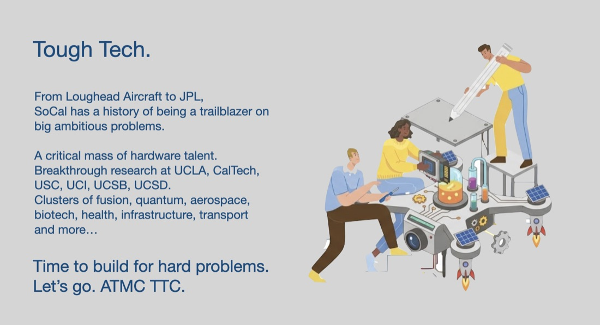

About the course
AY 2026–27 · Fall & Winter · 2nd-year MBA · max 20 studentsInside UCLA labs and across the Southern California ecosystem, breakthrough technologies are waiting — with the potential to address problems in energy, space, defense, food security, advanced materials, and beyond. The hard part is not the discovery; it is the passage from lab to market.
In this two-quarter capstone you make that leap yourself. You serve as the business co-founder for a real invention, working alongside a technical team — PIs, postdocs, engineers, your “innovation co-founders” — to move it toward the world. You identify the venture’s binding constraint among five core risk areas, then go de-risk it with real evidence.
You do not need to be a scientist or engineer to excel here. You do need to be willing to get technical enough to be dangerous, to put your name on your numbers, and to be judged by practitioners.

Units, prerequisites, and grading basis
274A (Fall, 4 units) — Lectures and fieldwork, three hours. In Progress grading; credit given on completion of 274B. Expect at least one hour per week of team meetings outside class.
274B (Winter, 4 units) — Fieldwork, board-style reviews, and feedback sessions, three hours. Requisite: 274A. Letter grading.
No course prerequisites. Enrollment is limited to second-year full-time Anderson MBA students admitted to the course. There is no course reader and no casepack — required purchases: none.
Career paths the capstone accelerates
- Technology investment (VC, PE, CVC) — evaluate early-stage technologies with the verification habits investors increasingly screen for.
- Corporate innovation — bridge scientific research teams and business units.
- Startups — be the business co-founder of a deep tech startup; some students continue with their capstone team.
- Hard tech operators and dual-use innovation — chief of staff, BD, GTM, and program roles across the corridor.
How this course is taught
General knowledge and polished analysis are now cheap: any frontier model can produce a competent market sizing, a clean financial model, a plausible strategy memo. What remains scarce — and what this capstone exists to build — is the last mile: taste, verification, and judgment. (See Joel Podolny, “The Last Mile Problem of Professional Development.”)
- The last mile is the course.When AI can produce the artifact, the artifact stops signaling the thinking. So this course grades the thinking: the quality of your reasoning, the truth behind your numbers, and the questions you know to ask.
- Depth from variety: the bench.Judgment is absorbed the way residents absorb clinical judgment — many brief, high-intensity encounters with experienced practitioners, each anchored to a live decision. A rotating bench of founders, investors, PIs, and operators joins us all year.
- No casepack: Living Briefs.Most weeks you receive a short, AI-assembled dossier on a real decision facing a real company right now, built from primary sources: contract awards, regulatory dockets, patents, technical papers, hiring data, trade press. Fresher than any case, free, and — by design — imperfect.
- Verification is a graded sport.Every Living Brief contains seeded flaws: a wrong unit, a misapplied metric, a fabricated citation, a plausible-but-false claim. Class opens with the Verification Bounty. Catches score; confident false accusations lose points.
- The signature standard.Every graded deliverable ends with a signature block. At the final Board Meeting, judges pick any number on any slide and you have sixty seconds to give its provenance.
“We stand behind every claim in this document. Where we could not verify, we have said so.” — And note: “we recommend against proceeding” is a fully legitimate, fully gradeable conclusion. Evidence that kills a path cleanly is worth more than optimism that survives no contact with reality.
The Corridor: our second classroom
El Segundo has quietly become the country’s most important address for building physical things again — the highest density of machine shops in the U.S., legacy anchors (SpaceX in Hawthorne; Northrop Grumman, The Aerospace Corporation, and Space Systems Command at Los Angeles Air Force Base), and a wave of young companies across defense, space, energy, and climate. The class engages this ecosystem four ways.
Adopt-a-Company (all year)
In Week 1 you draft one corridor company and track it all year — funding rounds, contract awards, test campaigns, launches, stumbles. When your company makes news, you open class with a 90-second situation report. The roster refreshes each fall and draws from companies such as Radiant, Varda Space, Impulse Space, Neros, Castelion, CX2, Senra Systems, Amca, Durin, Rainmaker, Valar Atomics, Apex, Arc, Hadrian, and Terraform Industries; Long Beach’s Rocket Lab, Relativity Space, and Vast; and the climate portfolio around LACI and the Port of Los Angeles.
Corridor Day (Session 7)
A field session inside two to three corridor companies, ending with a founders’ panel over lunch. You will stand on factory floors that did not exist three years ago.
The corridor bench
Guests, Phase 2 expert consultations, and final-round judges are drawn substantially from corridor founders, investors, and operators — so the standards you are graded against are the standards of the community you may join.
The Corridor Census (public, class-authored)
Each student’s adopted-company profile — rigorously sourced, verified, signed — is compiled into a public annual report on the LA hard tech corridor, published with the class listed as authors and launched at the final Board Meeting. Proof that you can produce signed, verified analysis about the most exciting industrial story in America — because you were there.
Schedule
Sessions meet Wednesdays 9:00–11:20 AM in Entrepreneurs Hall C315 unless flagged. Fall dates are set (download the .ics); Winter dates are pending the UCLA academic calendar. Living Briefs and anchor readings (all free links) post to Bruin Learn the Friday before class.
Fall 2026 — MGMT 274A
| # | Session | Prepare |
|---|---|---|
| 1 | The Corridor and the CraftWed Sep 30 · Guest: Mark Wisniewski, UCLA Technology Development GroupWhy atoms are hard now; the five-risk map; how this course works. Adopt-a-Company draft. Invention–team matching launches. Calibration rep: rank three anonymized deep tech one-pagers against how investors actually ranked them. | Podolny, “The Last Mile Problem”; The Engine, Tough Tech Landscape; BVP XB100; a16z Big Ideas. |
| Milestone: TL-TR baseline survey | ||
| 2 | Technology Risk: Roadmaps and Figures of MeritWed Oct 14 · Lab visit: Li Lab (ChargeIQ) · Living Brief #1 · Bounty #1TRLs/MRLs and how they get gamed; choosing the metric that matters — and who decides; technical roadmapping. | Living Brief #1; NASA, Technology Readiness Levels. Optional: Gans, Kearney, Scott & Stern, “Choosing Technology”; Krieger, Schnitzer & Watzinger, “Standing on the Shoulders of Science.” |
| Milestone: Team Agreement due | ||
| 3 | Market Risk: Evidence in Markets That Don’t Exist YetWed Oct 28 · Living Brief #2 · Bounty #2Beachhead selection under long sales cycles; discovery interview and experiment design; the LOI quality ladder; what counts as a traction signal. | Living Brief #2 and posted readings. |
| 4 | The Government CustomerWed Nov 18 · Guest: defense / dual-use practitionerSBIR/STTR, OTAs, DIU, primes vs. new entrants; data rights and IP with a government buyer; Space Systems Command as the anchor customer next door. Simulation: negotiate scope, milestones, and data rights against an AI contracting officer. | Posted readings. |
| Milestone: Strengths, Risks & Considerations team meeting | ||
| 5 | Financing Risk: Milestones to MoneyWed Dec 2 · Guest: deep tech investor · Bounty #3Capital-stack mapping across grants, venture, strategics, and debt; venture math for ten-year assets; non-dilutive pathways; term-sheet red flags; first-of-a-kind (FOAK) preview. | Living Brief and posted readings. |
| 6 | Mid-Project ReviewsWed Dec 9 · Guest reactor from the benchPhase 1 presentations (5–7 min per team) with structured peer feedback. | Phase 1 slides. |
| Milestone: TL-TR midpoint survey | ||
Winter 2027 — MGMT 274B (dates TBD)
| # | Session | Prepare |
|---|---|---|
| 7 | Corridor DayExtended field session · El Segundo / Hawthorne / TorranceSite visits inside two to three corridor companies, closing with a founders’ lunch panel. Live situation reports on adopted companies. The session runs long — plan accordingly. | Visit-day dossier (Living Brief on each host). |
| Milestone: Quarter Two planning meeting | ||
| 8 | Scale Risk: The Techno-Economics of AtomsGuest: manufacturing / operations leader · Living Brief #5 · Bounty #4Unit economics at 1× / 10× / 100×; learning curves and Wright’s law; pilot purgatory; supply chains and manufacturability. Workshop: build your venture’s techno-economic table and survive a line-item provenance drill. | Living Brief #5; TEA template. |
| Milestone: Motivation, Contribution & Goals team meeting | ||
| 9 | Regulatory Risk and Leading for the Long GameGuest: tough tech CEO · Living Brief #6 · Bounty #5Regulatory pathway mapping and precedent mining; public legitimacy when hardware fails in public; leading teams over decade-long arcs. | Living Brief #6; Raff & Murray (posted). |
| 10 | The El Segundo Board MeetingMarch · Venue announced Week 6Final defenses before a panel of corridor founders, investors, PIs, and faculty; line-item defense round; signature ceremony; public launch of The Corridor Census. | Rehearse; bring printed, signed signature page. |
| Milestone: TL-TR final report | ||
Deliverables & grading
| Assignment (across both terms) | Weight |
|---|---|
| Individual | |
| Contribution & Question Ledger | 15% |
| Verification Bounties (best 4 of 5 rounds) | 10% |
| Adopt-a-Company & Corridor Census profile | 5% |
| Innovation Landscape Field Guide | 15% |
| Peer / Self Assessment | 10% |
| Leadership Development | P/F |
| Group | |
| Weekly Progress Reports | P/F |
| Phase 1: Problem & Initial Hypotheses | 10% |
| Phase 2: Focal Risk Deep Dive & Board Meeting | 35% |
| Total | 100% |
Students are evaluated individually; team members can receive different grades. Students receive an “I” for the first term; grades are assigned at the close of the second term. Pass/fail components that are unsatisfactory reduce the final letter grade by one step. Full rubrics are on Bruin Learn.
Individual
Contribution & Question Ledger (15%)
Attend every session and contribute. Missing more than two classes will affect your grade. Before every session with a guest or a Living Brief, submit by Tuesday 5 PM the one question you would ask if you had a single shot. Great questions carry a premise, would change a decision depending on the answer, and could not be answered by a model. The best get asked — by you — in class.
Verification Bounties (10%)
Five times during the year, class opens with a 15-minute bounty round on that week’s Living Brief, which contains two to four seeded flaws. A verified catch earns +2, a partial catch +1, a confident false accusation −1. Your grade uses your team’s best four of five rounds; every student must present a catch at least once.
Adopt-a-Company & Corridor Census Profile (5%)
Draft your corridor company in Week 1 and deliver 90-second situation reports when it makes news. In Week 9, submit a one-page company profile — public sources only, fully sourced, Judgment Log attached, signed. Profiles are edited into The Corridor Census; companies receive a courtesy right-of-reply, and anything not verifiable from public sources does not run.
Innovation Landscape Field Guide (15%)
A ~3-page memo plus one visual situating your team’s invention in its industrial and technological context: a plain-language explanation of the technology; a TRL assessment including what the TRL number hides; a map of key players, adjacent technologies, and institutions; and where the gaps and opportunities are. In class you road-test it by explaining your invention to a classmate from another team and, where feasible, a practitioner from the bench. Judgment Log required.
Peer / Self Assessment (10%)
Twice during the year (end of Fall and end of Winter), reflect on your own contributions and give constructive feedback to teammates. Results are normalized and used to calibrate individual grades within teams.
Leadership Development (P/F)
A cadenced structure of leadership development assignments and team meetings with Matt Gorlick supports students and their teams throughout the year.
Group
Weekly Progress Reports (P/F)
Due Tuesdays at 5 PM PT, including non-class weeks: what has been accomplished, next steps, barriers — plus Asks for the Bench: the specific expert, introduction, or artifact your team needs this week, which the teaching team will work to route through the corridor network.
Phase 1: Problem & Initial Hypotheses (10%)
Three slides, developed with your innovation co-founders: a concise problem statement; a stakeholder journey map from lab to end user; and the 3–5 baseline assumptions underlying value creation and capture, plus the focal risk you plan to pursue. Presented in Session 6.
Phase 2: Focal Risk Deep Dive & Board Meeting (35%)
Select the most critical risk on the lab-to-market path and de-risk it through targeted action. What counts as early evidence depends on the focal risk:
- Technology — a sequenced technical roadmap with 2–3 plausible pathways; consult 3+ technical experts outside your team.
- Market — 8+ discovery interviews across segments; an early-adopter profile; at least one traction signal.
- Regulatory — a step-by-step pathway map validated against public precedents; 3+ regulatory experts.
- Scale — a scale-up map, candidate suppliers or partners, and a techno-economic table you can defend line by line; 3+ external representatives.
- Financing — a capital-pathways map tying funding sources to technical and regulatory milestones; 3+ external sources.
Deliverables: a ~20-slide deck (plus appendix), a one-page memo for your innovation team, your Judgment Log, and a signed signature page — defended in a ~15-minute pitch plus Q&A at the El Segundo Board Meeting.
AI policy: required, disclosed, owned
This course treats frontier AI the way a pilot treats instruments: mandatory, and never a substitute for airmanship.
- Required. Use frontier AI tools on every substantial deliverable — research synthesis, drafting, modeling, critique. Declining to use them is a handicap this course will not teach around.
- Disclosed. Every graded artifact comes with a half-page Judgment Log: which tools you used and for what; what the AI drafted; what you changed and why; what you caught it getting wrong; how you verified the claims that carry weight. The log is graded on the delta — what did you add beyond the model?
- Owned. Your signature means every claim is yours. Unverified claims must be marked as such. Presenting AI output you cannot defend under questioning is this course’s cardinal sin, and is treated as an integrity matter.
Required tools: a frontier AI assistant (free tiers are sufficient) and a lab notebook — digital or paper — for your Judgment Log. This policy operates within UCLA’s academic integrity policy.
Teaching team
Jane Wu — Faculty of record. Assistant Professor of Strategy at UCLA Anderson; faculty affiliate of the Price Center and the Easton Technology Management Center. Office hours Wednesdays 11 AM–12 PM online (link on Bruin Learn), or by email.
Matt Gorlick — Leadership development. Runs the TL-TR surveys and the cadence of team meetings across both quarters.
The bench — A rotating roster of corridor founders, investors, PIs, and operators who join as guests, Phase 2 consultants, and Board Meeting judges. Interested in hosting a site visit, judging, or bringing an invention to the class? Get in touch.